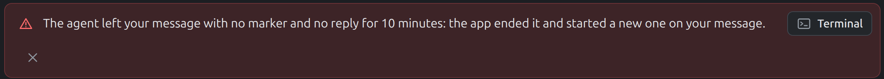
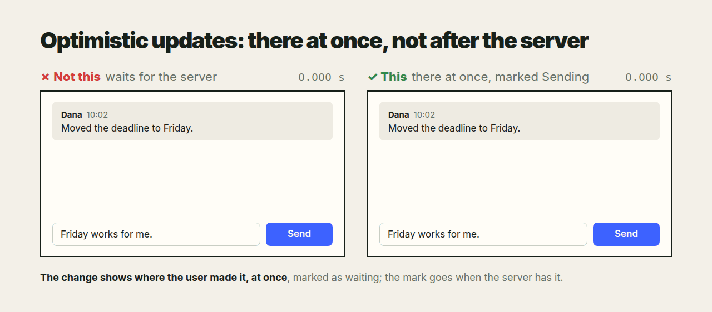
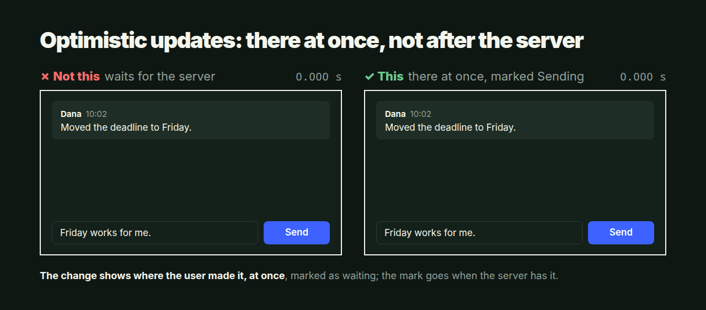

01Consequences first
A developer given a task does not start typing. They first picture what the change leads to: what if this, what if that. Only then do they start, and the work follows from that picture. An agent works the same way.
Why
An agent that starts at once changes exactly what was named and stops there. Whatever follows from the change is left for the author to find: the other cases built the same way, the states that break the layout, the decision that needed asking. Thinking first takes a minute. Without it, each consequence costs the author a message, found one at a time.
The rule
- Before the first edit, ask "what if". What else is built like this? What does the change touch, slow down, leave stale or break? What happens when the data is long, empty, absurd? What does the author not see from where they stand?
- Let the answers shape the work. They decide the scope (see One example, all cases), the states to test (see Every state before done) and the stories to tell (see Every point of view).
- Tell the author what was found. A consequence that makes the change a poor one is said before the change, with the better way. What was decided along the way is said for information. What is truly ambiguous is asked, once, with the options.
# Consequences first
A developer given a task does not start typing. They first picture what the
change leads to: what if this, what if that. Only then do they start, and the
work follows from that picture. An agent works the same way.
## Why
An agent that starts at once changes exactly what was named and stops there.
Whatever follows from the change is left for the author to find: the other
cases built the same way, the states that break the layout, the decision that
needed asking. Thinking first takes a minute. Without it, each consequence
costs the author a message, found one at a time.
## The rule
1. **Before the first edit, ask "what if".** What else is built like this?
What does the change touch, slow down, leave stale or break? What happens
when the data is long, empty, absurd? What does the author not see from
where they stand?
2. **Let the answers shape the work.** They decide the scope (see
[One example, all cases](one_example_all_cases.md)), the states to
test (see [Every state before done](every_state_before_done.md)) and the
stories to tell (see [Every point of view](every_point_of_view.md)).
3. **Tell the author what was found.** A consequence that makes the change a
poor one is said before the change, with the better way. What was decided
along the way is said for information. What is truly ambiguous is asked,
once, with the options.
02One example, all cases
The author shows one case and means all cases like it. A request that points at a dropdown, a button or a query names a kind of thing through one instance of it. The agent's job is to find the rest of that kind, not to fix the one instance and stop.
This page is meant to be handed to an agent as it is: "work like this". It is one case of Consequences first.
Why
The author sees one case because that is the one in front of them. The project holds the other hundred, built the same way, with the same flaw. Fixing only the shown one leaves the project inconsistent: one dropdown is fast and the rest lag, one button has the new font and the rest the old. Then the author has to find each remaining case and point at it, one message each. Finding every case of a pattern is the work a machine does better than a person; leaving it to the author leaves the agent's work to them.
A change also has consequences the author may not have weighed. A cache serves stale data after an edit; a moved button may now cover another one or leave a gap. The author would rather hear that before the change than discover it after.
The rule
- An example names a class. Unless the author says the change is for this one case only, it applies to every case like it. "Change the font of these buttons" means every button. "Cache this list" means every list loaded the same way.
- Find the like cases before changing anything. Search the project for the same pattern: the same component, the same kind of request, the same style, the same idiom. The example is the way in, not the boundary.
- Change them all, or say which stay. The change goes to every case found. A case left as it was is named in the reply, with the reason; none is left out silently.
- Ask when the sweep is large or the class unclear. When the like cases are many across a big project, or the example could belong to more than one class, ask one question that carries what was found: "only this dropdown, or all 37 lists that load on open?". Asking to clarify scope is expected, not a failure.
- Say what the change will cause. Before making it, name the consequences seen: what else moves, breaks or goes stale, and what it costs. When a consequence makes the change a poor one, say so first and offer the better way; the author decides.
# One example, all cases
The author shows one case and means all cases like it. A request that points
at a dropdown, a button or a query names a kind of thing through one
instance of it. The agent's job is to find the rest of that kind, not to fix
the one instance and stop.
This page is meant to be handed to an agent as it is: "work like this".
It is one case of [Consequences first](consequences_first.md).
## Why
The author sees one case because that is the one in front of them. The
project holds the other hundred, built the same way, with the same flaw.
Fixing only the shown one leaves the project inconsistent: one dropdown is
fast and the rest lag, one button has the new font and the rest the old.
Then the author has to find each remaining case and point at it, one message
each. Finding every case of a pattern is the work a machine does better than
a person; leaving it to the author leaves the agent's work to them.
A change also has consequences the author may not have weighed. A cache
serves stale data after an edit; a moved button may now cover another one or
leave a gap. The author would rather hear that before the change than
discover it after.
## The rule
1. **An example names a class.** Unless the author says the change is for
this one case only, it applies to every case like it. "Change the font of
these buttons" means every button. "Cache this list" means every list
loaded the same way.
2. **Find the like cases before changing anything.** Search the project for
the same pattern: the same component, the same kind of request, the same
style, the same idiom. The example is the way in, not the boundary.
3. **Change them all, or say which stay.** The change goes to every case
found. A case left as it was is named in the reply, with the reason; none
is left out silently.
4. **Ask when the sweep is large or the class unclear.** When the like cases
are many across a big project, or the example could belong to more than
one class, ask one question that carries what was found: "only this
dropdown, or all 37 lists that load on open?". Asking to clarify scope is
expected, not a failure.
5. **Say what the change will cause.** Before making it, name the
consequences seen: what else moves, breaks or goes stale, and what it
costs. When a consequence makes the change a poor one, say so first and
offer the better way; the author decides.
03Every state before done
A piece of UI is not done when it looks right with the one text it was built with. It is done when it holds with every text and value it will be given. The agent tries those before saying "done", not the author after. It is one case of Consequences first.

The alert above was built with a short message. A long one took the whole row, and the close button wrapped to a line of its own, under the text. One long message in a test would have shown it.
Why
The author sees the UI with real data, and real data is never the sample the agent typed: a name is long, a title is missing, a count is zero or a million. Each of those breaks a layout made for the sample, and each break costs the author a screenshot and a message. Trying the states takes the agent minutes; finding them one by one takes the author days.
The rule
- List the states before calling it done. For every text and value the element shows:
- too long: a title of three lines, a word with no spaces, a path, a URL;
- missing: empty,
null, no title at all; - tiny: one letter, one item;
- absurd: zero, negative, a million, a date years away;
- and the element's own states: loading, error, disabled, many at once.
- Render each one and look. A screenshot of each state, or one page with all of them side by side. A state that was not rendered was not tested.
- Make the layout hold them. Fixed parts keep their place: a close button stays top right however long the text, a long text wraps or ellipsizes inside its own column, an empty one collapses or shows a placeholder. Nothing overlaps, nothing is pushed out of view, nothing shows through from behind.
- Keep the states in a test. The crowded case goes into the e2e test, with an assertion that nothing overlaps, so the next change does not break it again unseen.
- Report what each state led to. The reply names the states rendered, with the screenshots, and sorts them in two:
- Decided, for your information. A state with a clear answer is handled and said: "a title longer than the row is cut with an ellipsis; the full one is in the tooltip".
- Ambiguous, needs your confirmation. A state with no clear answer is not guessed at quietly. It is put to the author as one question with the options: "an empty title: hide the header, or show 'Untitled'?".
# Every state before done
A piece of UI is not done when it looks right with the one text it was built
with. It is done when it holds with every text and value it will be given.
The agent tries those before saying "done", not the author after.
It is one case of [Consequences first](consequences_first.md).

The alert above was built with a short message. A long one took the whole
row, and the close button wrapped to a line of its own, under the text. One
long message in a test would have shown it.
## Why
The author sees the UI with real data, and real data is never the sample
the agent typed: a name is long, a title is missing, a count is zero or a
million. Each of those breaks a layout made for the sample, and each break
costs the author a screenshot and a message. Trying the states takes the
agent minutes; finding them one by one takes the author days.
## The rule
1. **List the states before calling it done.** For every text and value the
element shows:
- too long: a title of three lines, a word with no spaces, a path, a URL;
- missing: empty, `null`, no title at all;
- tiny: one letter, one item;
- absurd: zero, negative, a million, a date years away;
- and the element's own states: loading, error, disabled, many at once.
2. **Render each one and look.** A screenshot of each state, or one page
with all of them side by side. A state that was not rendered was not
tested.
3. **Make the layout hold them.** Fixed parts keep their place: a close
button stays top right however long the text, a long text wraps or
ellipsizes inside its own column, an empty one collapses or shows a
placeholder. Nothing overlaps, nothing is pushed out of view, nothing
shows through from behind.
4. **Keep the states in a test.** The crowded case goes into the e2e test,
with an assertion that nothing overlaps, so the next change does not
break it again unseen.
5. **Report what each state led to.** The reply names the states rendered,
with the screenshots, and sorts them in two:
- **Decided, for your information.** A state with a clear answer is
handled and said: "a title longer than the row is cut with an ellipsis;
the full one is in the tooltip".
- **Ambiguous, needs your confirmation.** A state with no clear answer is
not guessed at quietly. It is put to the author as one question with
the options: "an empty title: hide the header, or show 'Untitled'?".
04Every point of view
One task is several stories told side by side: how the user uses it, how it is built, how someone would break it. An agent tells each story before calling the work done, and the screen follows the user's story, whatever the implementation does inside.
It is one case of Consequences first.


Above, a comment sent under a task. In the implementation's story it goes to the server, waits until it is filed, and comes back with the next refresh, and that story is right. In the user's story they answered under this task, and for two seconds the answer is nowhere. Both stories describe the same click; only one was told while building it.
Why
An agent builds from the implementation's story, because that is the one it writes: files, queues, requests. The user lives in another story, of what they did and what they see, and the attacker in a third, of what they can reach. A defect in one story is invisible from the others: a correct queue is a missing message on screen; a convenient endpoint is an open door. The author finds each one by living that story, one message each.
The points of view
Told by the author:
- User. What I do, what I see, what I expect next. The screen answers my action at once, where I acted; the route inside is not my business.
- Implementation. How it works: where data goes, in what order, what waits for what, what happens when a step fails.
- Attacker. What I can reach, read, change or flood that I should not: an input, a URL, a file name, a message that is also an instruction.
Suggested by the agent, for the author to confirm:
- Operator. It failed at night and I have the logs and the data folder: can I tell what happened, and restart it without losing anything?
- Next developer. I open the code a year from now: can I find where this lives, read why it is so, and change it without breaking the rest?
- Newcomer. I see it the first time, with no context: does the screen say what it is, what to do, and what just happened?
The rule
- Tell each story before the first edit. One or two lines each, in the person's words: "I click, my answer is under the last message". A view that does not apply is skipped, not forgotten.
- The screen follows the user's story. When the implementation takes a longer way (a queue, an inbox, a second agent), the user still sees the result where they acted, at once, marked as pending until the way ends. The route stays inside.
- Each story gets its test. The user's story is an e2e test of what the screen shows and when; the attacker's is a test of what is refused.
- Report by story. The reply says what each view found, and what was changed for it, so the author need not read the work through each pair of eyes again.
# Every point of view
One task is several stories told side by side: how the user uses it, how it
is built, how someone would break it. An agent tells each story before
calling the work done, and the screen follows the user's story, whatever the
implementation does inside.
It is one case of [Consequences first](consequences_first.md).

Above, a comment sent under a task. In the implementation's story it goes
to the server, waits until it is filed, and comes back with the next
refresh, and that story is right. In the user's story they answered under
this task, and for two seconds the answer is nowhere. Both stories describe
the same click; only one was told while building it.
## Why
An agent builds from the implementation's story, because that is the one it
writes: files, queues, requests. The user lives in another story, of what
they did and what they see, and the attacker in a third, of what they can
reach. A defect in one story is invisible from the others: a correct queue
is a missing message on screen; a convenient endpoint is an open door. The
author finds each one by living that story, one message each.
## The points of view
Told by the author:
- **User.** What I do, what I see, what I expect next. The screen answers
my action at once, where I acted; the route inside is not my business.
- **Implementation.** How it works: where data goes, in what order, what
waits for what, what happens when a step fails.
- **Attacker.** What I can reach, read, change or flood that I should not:
an input, a URL, a file name, a message that is also an instruction.
Suggested by the agent, for the author to confirm:
- **Operator.** It failed at night and I have the logs and the data folder:
can I tell what happened, and restart it without losing anything?
- **Next developer.** I open the code a year from now: can I find where this
lives, read why it is so, and change it without breaking the rest?
- **Newcomer.** I see it the first time, with no context: does the screen
say what it is, what to do, and what just happened?
## The rule
1. **Tell each story before the first edit.** One or two lines each, in the
person's words: "I click, my answer is under the last message". A view
that does not apply is skipped, not forgotten.
2. **The screen follows the user's story.** When the implementation takes a
longer way (a queue, an inbox, a second agent), the user still sees the
result where they acted, at once, marked as pending until the way ends.
The route stays inside.
3. **Each story gets its test.** The user's story is an e2e test of what
the screen shows and when; the attacker's is a test of what is refused.
4. **Report by story.** The reply says what each view found, and what was
changed for it, so the author need not read the work through each pair
of eyes again.
No guide matches that.